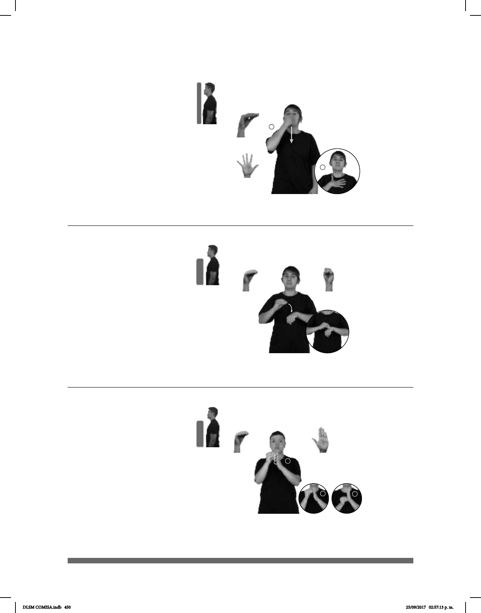

450
1
2
Seña: SM
Seña que pasa de O.9
a 5.1
Palma hacia adentro.
La mano inicia sobre la
nariz y termina sobre el pecho.
Movimiento: Recto hacia abajo.
Cabeza inclinada
hacia atrás aspirando profundamente.
sust. f. Sustancia que
generalmente se prepara con esencia
para dar buen olor a algo o a alguien.
Perfume (O-67)
PERFUME SUAVE pro-YO GUSTAR
Me gusta el perfume suave.
Seña: SB
MD O.5, MB S.1
MD y MB palmas
hacia abajo.
A la altura del pecho.
MD sobre MB.
Movimiento: La MD simula un
salto.
v. tr. Hacer que algo o
alguien pase a estar o quede en
cierto lugar, posición, circunstancia
o estado.
Poner (O-68)
POR-FAVOR tú-PONER-a-el
objeto
pos-TU MESA
Por favor, ponlo en tu mesa.
1
2
3
Seña: SB
MD O.5, MB B-P.2
MD palma hacia la
izquierda, MB palma hacia la derecha.
La MD inicia sobre los
dedos de MB y termina sobre su
muñeca. MB a la altura del cuello.
Movimiento: La MD simula varios
saltos.
1. v. tr. Escribir algo en
el papel. 2. v. tr. Escribir o marcar los
datos que se piden o se requieren en un
documento, en un formulario o en algo
similar.
Poner (B) (O-69)
pos-MI PAPÁ LLENAR-FORMATO PARA MANEJO LICENCIA TRAMITAR
Mi papá llena el formato para tramitar su licencia de manejo.
DLSM COMISA.indb 450 25/09/2017 02:57:13 p. m.